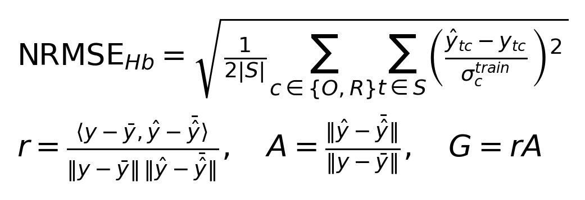
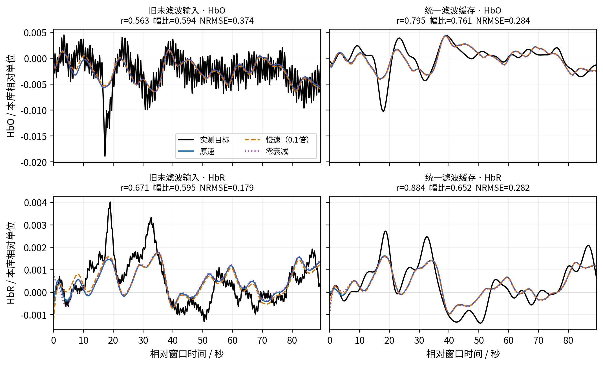
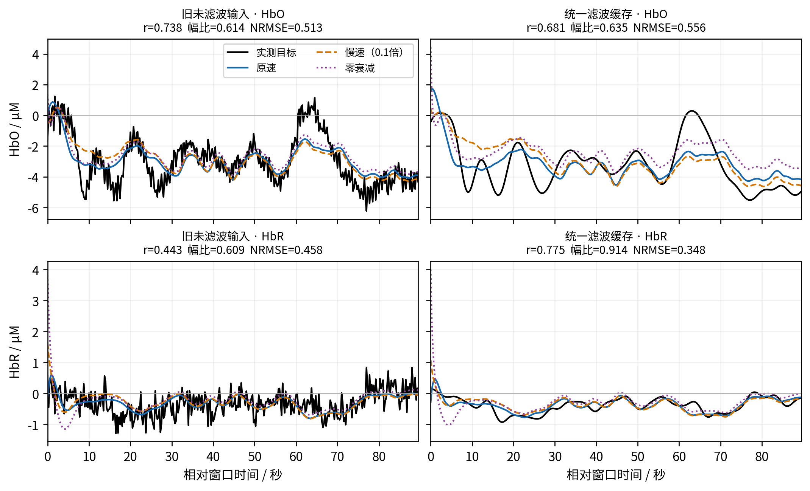
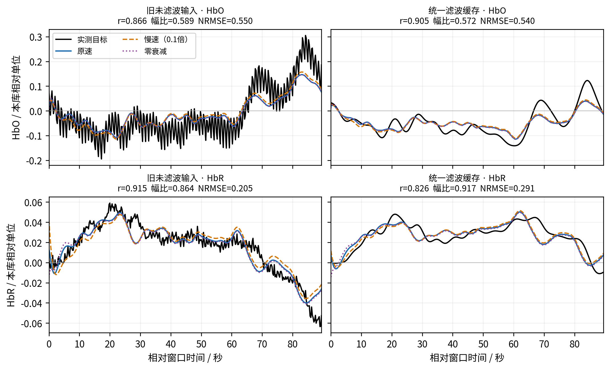
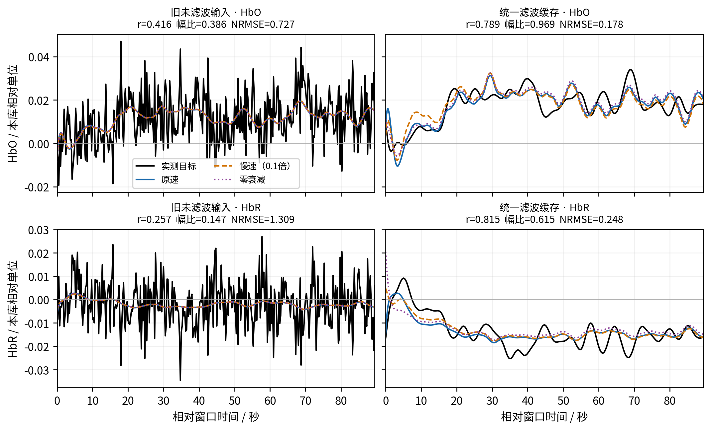
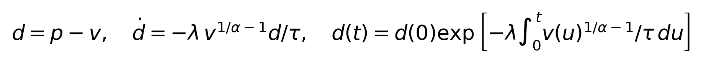
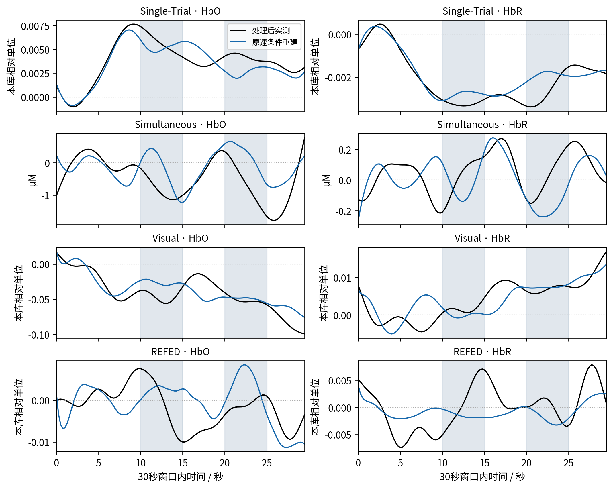
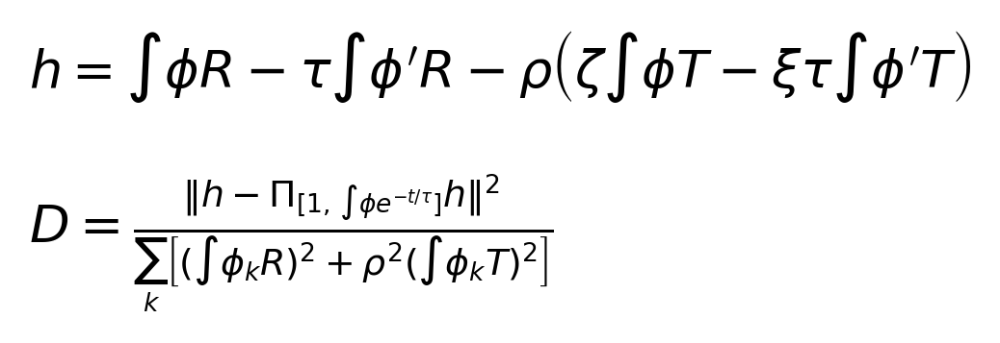

2026-10-27 · 四个固定样例的快速敏感性复测。仅复核10.23无额外成分的共享驱动重建、无源衰减与相容性诊断；每库一个评价被试。
REFED样例的“很难重建”需要改写；“仅放慢衰减能解决主要误差”仍缺少一致支持；低误差不等于波形、参数或生理状态恢复。
| 90秒联合完整 | 双Hb NRMSE：旧→新 | 相关系数：HbO/HbR，旧→新 | 新中心化幅比：HbO/HbR |
|---|---|---|---|
| Single-Trial | 0.293 → 0.283 | 0.563/0.671 → 0.795/0.884 | 0.761/0.652 |
| Simultaneous | 0.486 → 0.464 | 0.738/0.443 → 0.681/0.775 | 0.635/0.914 |
| Visual | 0.415 → 0.434 | 0.866/0.915 → 0.905/0.826 | 0.572/0.917 |
| REFED | 1.059 → 0.216 | 0.416/0.257 → 0.789/0.815 | 0.969/0.615 |
本表NRMSE各用本分支开发集训练SD；相关系数与幅比均在评价窗口中计算。幅比1表示振幅匹配，不能从相关性高推断振幅正确。四个样例分别解释，不混池，不计算总体显著性。
无额外项线性放松的共同参数节点：Single-Trial 80→80、Simultaneous 22→9、Visual 0→0、REFED 0→80，分母均为80。REFED由未找到共同节点变为全部节点通过，支持观测相容性改善，同时削弱参数辨识能力。
共48任务、144模型结果：72个旧拟合逐数组复用、72个新拟合，全部数值合格。所有模型仅含原有状态和共享驱动；未加入独立输出成分、交换项或持续状态输入。
事实源：本运行summary.json、tasks/*.json与NPZ。筛选资格修正和独立数值复核由verification.json持有；旧运行和本次原始plan.json均保留。
每库从旧原速90秒联合完整重建的12条候选记录、6名被试中，选误差最接近中位数的一条；等距时按身份字符串排序。选择先于新缓存拟合，是解释性抽样。
| 数据集 | 被试 | 记录 | Hb通道 | Hb原始时钟/秒 | EEG原始时钟/秒 |
|---|---|---|---|---|---|
| Single-Trial | subject_01 | session_00 | AF7Fp1 | 132.840–222.840 | 80.961–170.961 |
| Simultaneous | VP001 | cnt_wg | AFp7 | 70.840–160.840 | 53.583–143.583 |
| Visual | S07 | S07_Probe1 | CH7 | 147.000–237.000 | 123.974–213.974 |
| REFED | 14 | video_13 | CH49 | 0.000–90.000 | 0.000–90.000 |
核对正式evidence_v2时发现，初始计划误用了修正前的Simultaneous资格标记，将一次反事实重放失败当作原拟合失败。正确分母为12/12，原中位数0.23605修正为0.27912；按同一规则仍选VP001/r0，四个样例均未改变，无需重拟合。修正写入verification.json，不改写已执行计划或历史证据。
同一90秒窗口及其中间[30,60)秒分别拟合；两种长度都以自身首5秒作参考，末一个0.25秒采样箱不进入拟合或评分。90秒评分359点，30秒评分119点。两个长度不是两个独立被试。
| 条件 | 拟合可见量 | 主要评分范围 |
|---|---|---|
| 联合完整 | EEG、HbO、HbR完整窗口 | 除末箱外全窗Hb |
| 仅Hb完整 | 仅HbO/HbR；EEG目标不进入拟合 | 除末箱外全窗Hb；另查看未拟合EEG |
| 联合隐藏段 | 全窗EEG，Hb每30秒隐藏10–15和20–25秒 | 仅隐藏Hb；30/90秒分别40/120点 |
共享驱动经血流、体积、总Hb和去氧Hb状态生成两个Hb分量，EEG由同一驱动线性读出。每臂估计整个窗口的驱动与五个初态；固定τ=2秒、κ=0.64、γ=0.32、α=E0=0.32、P0=1、Q0=0.35和神经血管增益1。
沿用旧求解预算600次评价；驱动曲率惩罚0.01，初态惩罚100，log-flow先验SD为ln2、权重1。原速从静息起点开始，其他臂比较本分支原速解与静息两个起点；未针对滤波结果调参。
统一缓存先在完整登记记录离线处理，再遮挡特征。因此隐藏段结果是已处理特征的离线插值，不能解释为原始传感器隔离或因果未来预测。当前可见窗口参与条件拟合，评价样例没有参与开发集坐标训练。
旧分支仅使用保留的未滤波准备数组；新分支通过统一加载入口读取v5/none缓存，使用整记录0.01–0.2 Hz带通和10 Hz输出，再作0.25秒分箱及首5秒参考，不重复带通。EEG特征定义与旧实验相同。
两分支使用相同开发记录，各自重新拟合EEG主成分、共同正Hb缩放和分量训练SD。每库12条开发记录全部可用，评价被试未进入标定。Simultaneous旧mmol/L统一乘1000转为μM；其余库保留相对单位，不冒称绝对浓度。
| 数据集 | 分支 | 训练记录 | 缓存输出单位 | 物理/缓存坐标训练SD：HbO/HbR |
|---|---|---|---|---|
| Single-Trial | 旧未滤波输入 | 12 | relative_Hb_repo_approximation | 0.0074315/0.0042682 |
| Single-Trial | 统一滤波缓存 | 12 | relative_Hb_repo_approximation | 0.0053739/0.0017885 |
| Simultaneous | 旧未滤波输入 | 12 | uM | 2.1294/0.7892 |
| Simultaneous | 统一滤波缓存 | 12 | uM | 2.1128/0.45301 |
| Visual | 旧未滤波输入 | 12 | relative:visual_cognitive_motivation | 0.10864/0.05042 |
| Visual | 统一滤波缓存 | 12 | relative:visual_cognitive_motivation | 0.057094/0.02704 |
| REFED | 旧未滤波输入 | 12 | relative:refed | 0.01456/0.0073977 |
| REFED | 统一滤波缓存 | 12 | relative:refed | 0.028488/0.017786 |
除分支自身训练SD外，另将两分支预测误差都还原到相同缓存单位，再统一除以新分支训练SD。两者仍是对各自目标的误差；这不是把旧预测直接拿来预测新目标。
| 90秒原速联合完整 | 旧误差/新训练SD | 新误差/新训练SD | 共同分母下相对降低 |
|---|---|---|---|
| Single-Trial | 0.474 | 0.283 | 40.4% |
| Simultaneous | 0.672 | 0.464 | 30.9% |
| Visual | 0.788 | 0.434 | 44.9% |
| REFED | 0.466 | 0.216 | 53.7% |
REFED自身尺度NRMSE降低约79.6%，共同分母下约53.7%；HbO/HbR绝对RMSE分别约0.01059→0.00507和0.00969→0.00441。改善并非仅由分母产生，但不能把79.6%全部解释为波形恢复。
本轮检验的是统一缓存及相应重新标定后的条件重建。模型输出经分箱和参考算子比较，但没有对整记录潜在ODE输出重新执行完整带通；因此不能把差异孤立归因于某个频带，或宣称原始生理ODE已得到验证。

y为已处理实测目标，ŷ为完整模型预测，S为该条件评分时间点。σ为独立开发记录上的训练SD；先对时间和两个Hb分量的标准化平方误差平均，再开平方。双Hb NRMSE不是两个分量NRMSE的算术平均。
| 指标 | 计算与含义 |
|---|---|
| Pearson r | 评分时间内各自去均值后的相关性；1同形，0无相关，负数相反。 |
| 中心化幅比 A | 预测SD/目标SD；1理想，低于1振幅不足，高于1放大。 |
| 有符号增益 G | 目标到预测的中心化最小二乘投影系数r×A；不是能量占比。 |
| 偏移 | 平均(预测−目标)/训练SD；与中心化振幅分开。 |
| 局部尺度误差 | RMSE/本评分段目标SD；不能替代训练SD，也未用于拟合。 |
| 零预测基线 | 在同一参考坐标预测0，RMSE/同一训练SD；不拟合。 |
| 峰时间差 | 预测全局最大值时间−目标全局最大值时间；多峰时会跳到另一峰，不等同于传导时延。 |
| 共同尺度 | 绝对RMSE统一除以新分支训练SD，仅消除分母变化。 |
下列所有曲线显示完整预测，不把状态分量当作目标。颜色与线型固定：黑色实测目标、蓝实线原速、橙虚线慢速、紫点线零衰减。同一数据集、同一Hb分量的旧/新两图共用纵轴；不同库的单位及纵轴独立，不能直接比较振幅。

原速90秒的形状相关性从0.563/0.671升至0.795/0.884，峰值位置差从35.25/16.00秒缩至−0.25/−0.25秒。但幅比仍为0.761/0.652，HbR明显衰减。中间30秒完整拟合幅比1.024/0.935，恢复比90秒更好。隐藏段自身尺度误差从0.335升至0.395，统一分母则从0.562降至0.395；不能只凭其中一列宣布变好或变坏。
| 原速指标 | 旧未滤波 | 统一缓存 |
|---|---|---|
| 双Hb自身尺度NRMSE | 0.293 | 0.283 |
| 有符号增益 HbO/HbR | 0.334/0.399 | 0.605/0.577 |
| 平均偏移/训练SD HbO/HbR | 0.001/-0.000 | -0.003/0.001 |
| 最后30秒双Hb NRMSE | 0.253 | 0.201 |
样例：subject_01 / session_00 / AF7Fp1；所有臂在同一完整窗口分别拟合驱动和初态。图中r、幅比及NRMSE标注仅对应蓝色原速。

改善主要来自HbR：相关性0.443→0.775、幅比0.609→0.914，绝对RMSE0.361→0.158 μM。HbO相关性0.738→0.681且绝对RMSE1.091→1.176 μM，存在真实分量折中。全局HbO峰差−62.75秒反映最大峰选择改变，不应解释为生理延迟。零衰减90秒HbR幅比1.550、相关性0.437，取消衰减进一步损害该分量。
| 原速指标 | 旧未滤波 | 统一缓存 |
|---|---|---|
| 双Hb自身尺度NRMSE | 0.486 | 0.464 |
| 有符号增益 HbO/HbR | 0.453/0.270 | 0.432/0.709 |
| 平均偏移/训练SD HbO/HbR | 0.010/0.005 | 0.022/0.005 |
| 最后30秒双Hb NRMSE | 0.518 | 0.532 |
样例：VP001 / cnt_wg / AFp7；所有臂在同一完整窗口分别拟合驱动和初态。图中r、幅比及NRMSE标注仅对应蓝色原速。

90秒原速双Hb自身尺度误差略升，但共同尺度误差0.788→0.434。HbO相关性0.905仍伴随幅比0.572：趋势看似贴合，振幅只恢复约57%。HbR相关性从0.915降至0.826，局部尺度误差从0.406升至0.571，说明部分波形恢复反而变差。共同参数节点仍为0/80；滤波没有消除该样例的EEG与Hb联合折中。
| 原速指标 | 旧未滤波 | 统一缓存 |
|---|---|---|
| 双Hb自身尺度NRMSE | 0.415 | 0.434 |
| 有符号增益 HbO/HbR | 0.510/0.791 | 0.518/0.758 |
| 平均偏移/训练SD HbO/HbR | -0.002/0.004 | -0.005/0.003 |
| 最后30秒双Hb NRMSE | 0.516 | 0.584 |
样例：S07 / S07_Probe1 / CH7；所有臂在同一完整窗口分别拟合驱动和初态。图中r、幅比及NRMSE标注仅对应蓝色原速。

90秒原速相关性0.416/0.257→0.789/0.815，幅比0.386/0.147→0.969/0.615，确实恢复了更多低频形状。HbR仍低估约38.5%，HbO全局峰差−39.5秒，不能称逐峰精确恢复。中间30秒相关性仅0.421/0.568，HbR幅比0.321；90秒完整拟合的改善不能迁移成所有短窗均恢复良好的结论。
| 原速指标 | 旧未滤波 | 统一缓存 |
|---|---|---|
| 双Hb自身尺度NRMSE | 1.059 | 0.216 |
| 有符号增益 HbO/HbR | 0.161/0.038 | 0.765/0.501 |
| 平均偏移/训练SD HbO/HbR | 0.006/0.005 | 0.008/0.004 |
| 最后30秒双Hb NRMSE | 1.066 | 0.201 |
样例：14 / video_13 / CH49；所有臂在同一完整窗口分别拟合驱动和初态。图中r、幅比及NRMSE标注仅对应蓝色原速。

p为总Hb相对状态，v为体积相对状态，均无量纲；τ=2秒、α=0.32固定。原速/慢速/零衰减的λ分别为1/0.1/0，没有持续输入。正体积时d只能保留同号衰减或常量记忆；整个Hb仍可由共享驱动经v、q产生振荡。滤波不改变这一方程性质。
| 数据集 | 秒 | 旧：原速 / 慢速 / 零衰减 | 新：原速 / 慢速 / 零衰减 | 新慢速相对原速收益 |
|---|---|---|---|---|
| Single-Trial | 30 | 0.233 / 0.240 / 0.249 | 0.192 / 0.213 / 0.245 | -10.8% |
| Single-Trial | 90 | 0.293 / 0.288 / 0.294 | 0.283 / 0.285 / 0.285 | -0.8% |
| Simultaneous | 30 | 0.352 / 0.340 / 0.367 | 0.245 / 0.232 / 0.261 | +5.4% |
| Simultaneous | 90 | 0.486 / 0.526 / 0.572 | 0.464 / 0.545 / 0.729 | -17.4% |
| Visual | 30 | 0.290 / 0.292 / 0.292 | 0.200 / 0.205 / 0.216 | -2.2% |
| Visual | 90 | 0.415 / 0.413 / 0.415 | 0.434 / 0.428 / 0.436 | +1.3% |
| REFED | 30 | 1.088 / 1.087 / 1.099 | 0.186 / 0.185 / 0.187 | +0.4% |
| REFED | 90 | 1.059 / 1.059 / 1.059 | 0.216 / 0.222 / 0.258 | -2.7% |
表为联合完整双Hb NRMSE；正收益表示更低误差。新90秒仅Visual慢速略好约1.3%，另外三例更差；新30秒Simultaneous约5.4%改善、REFED约0.4%，其余更差。零衰减在全部8个联合完整样例条件中都更差。窗口相关，8不是独立样本量，不作显著性检验。
各臂独立重拟合共享驱动与五个初态，HbR变化可能来自上游补偿；这不是固定驱动的反事实重放。本次结果与旧“衰减过快不是主要误差的一致解释”相容，不能由少数样例重算旧被试层面的区间。
| 90秒原速 | 旧95%记忆损失/秒 | 新95%记忆损失/秒 | 新流量f范围 | 新体积v范围 |
|---|---|---|---|---|
| Single-Trial | 6.000 | 6.250 | 0.903–1.033 | 0.969–1.009 |
| Simultaneous | 6.250 | 6.250 | 0.915–1.011 | 0.891–1.003 |
| Visual | 7.000 | 6.750 | 0.725–0.918 | 0.904–0.988 |
| REFED | 6.500 | 6.500 | 0.896–1.036 | 0.895–1.010 |
新原速记忆约6.25–6.75秒损失95%，慢速约58.25–70.00秒；零衰减恒定。f、v是固定参数与坐标下的条件状态，不是实测真值；合法和收敛也不证明其生理准确性。
| 原速隐藏Hb | 秒 | 旧→新 NRMSE | 新零预测基线 | 新r：HbO/HbR | 新幅比：HbO/HbR |
|---|---|---|---|---|---|
| Single-Trial | 30 | 0.334 → 0.372 | 1.364 | 0.629/0.531 | 1.319/0.918 |
| Single-Trial | 90 | 0.335 → 0.395 | 0.446 | 0.626/0.564 | 0.907/0.716 |
| Simultaneous | 30 | 0.452 → 0.416 | 0.345 | 0.751/0.055 | 1.071/0.881 |
| Simultaneous | 90 | 0.512 → 0.464 | 1.453 | 0.424/0.781 | 0.684/0.921 |
| Visual | 30 | 0.365 → 0.186 | 0.622 | 0.545/0.951 | 1.915/1.319 |
| Visual | 90 | 0.743 → 0.768 | 1.200 | 0.365/0.836 | 0.475/1.085 |
| REFED | 30 | 1.191 → 0.229 | 0.167 | -0.148/-0.153 | 0.591/0.301 |
| REFED | 90 | 1.103 → 0.234 | 0.751 | 0.591/0.750 | 0.894/0.343 |
REFED 30秒隐藏段：新误差0.229低于旧1.191，但零预测仅0.167，模型反而更差；两个相关系数约−0.15，幅比0.591/0.301。不能说隐藏波形已恢复。
Simultaneous 30秒隐藏段：新误差0.416也高于零预测0.345，HbR相关性只有0.055。Visual 30秒隐藏段：新误差0.186看似很低，HbO幅比却为1.915、局部尺度误差2.423；HbR相关性0.951但幅比1.319。
Single-Trial 90秒隐藏段误差0.395，仅略优于零预测0.446，相关性0.626/0.564。REFED 90秒隐藏段形状改善，但HbR幅比0.343仍明显偏低。长窗完整拟合的成功不自动成立于短窗或隐藏段。
| 新隐藏段NRMSE | 秒 | 原速 | 慢速 | 零衰减 |
|---|---|---|---|---|
| Single-Trial | 30 | 0.372 | 0.391 | 0.417 |
| Single-Trial | 90 | 0.395 | 0.402 | 0.396 |
| Simultaneous | 30 | 0.416 | 0.398 | 0.436 |
| Simultaneous | 90 | 0.464 | 0.506 | 0.712 |
| Visual | 30 | 0.186 | 0.213 | 0.225 |
| Visual | 90 | 0.768 | 0.755 | 0.772 |
| REFED | 30 | 0.229 | 0.234 | 0.229 |
| REFED | 90 | 0.234 | 0.259 | 0.231 |
新90秒仅Visual慢速略改善，REFED零衰减仅约1.7%改善；新30秒仅Simultaneous慢速改善。局部例外不能支持统一延长初态记忆方案。这里未比较错配EEG或无EEG隐藏插值，不能从隐藏段分数推断EEG提供了独立信息。

每行一个样例，左HbO、右HbR；灰色为模型看不到的Hb特征，EEG仍可见。各图纵轴独立，均还原到缓存单位。蓝线为单独拟合30秒窗口的原速完整预测，黑线为处理后实测目标。
REFED隐藏段的负相关、Visual HbO过大的起伏以及Simultaneous HbR的弱对应关系，使得“低NRMSE＝波形恢复”在这些样例上不成立。灰区之外的贴合是条件拟合，不能代替隐藏区检验。
| 90秒样例 | 共同节点：旧→新 | 弱式固定τ的D：旧→新 | 弱式最优D：旧→新 |
|---|---|---|---|
| Single-Trial | 80/80 → 80/80 | 1.278 → 0.866 | 1.162 → 0.732 |
| Simultaneous | 22/80 → 9/80 | 1.571 → 1.776 | 1.571 → 1.772 |
| Visual | 0/80 → 0/80 | 0.515 → 1.358 | 0.333 → 0.795 |
| REFED | 0/80 → 80/80 | 1.837 → 0.657 | 0.927 → 0.656 |
线性放松在同一个参数节点、同一组共享驱动与初态系数下，同时要求EEG、HbO、HbR各自NRMSE≤0.5个本分支训练SD。τ为0.5–8秒、步长0.5的16节点；κ为0.2/0.4/0.64/1/1.5，共80节点。这是工程容限，未按噪声校准；自由系数不保证非线性物理可行。
REFED：出现样例级反例。旧输入未找到共同节点，新输入全部通过。不能继续据此样例把较大旧误差直接归因于模型结构不足。Single-Trial：两分支均全部通过，参数不唯一的判断保持。Visual：均0/80，只能说当前网格未找到见证，不能排除连续参数域或其他读出。
Simultaneous：22降至9个节点；新节点只在κ=0.2、τ=3–7秒。HbR波形改善并没有带来更宽的联合可行区域。仍有多个节点，不能将最优节点解释为真实τ或κ。30秒只计算名义节点，本报告不把其1点结果与80点扫描混比。
弱式D是相对动态能量归一的Hb闭合残差，越低越相容。本轮在两分支同样的0.25秒准备目标上重算；它不是旧原生采样率全库存普查的重跑。因此不能拿这四个D更新旧总体分布。Visual和Simultaneous的D反而升高，也反驳“滤波让所有模型约束都更成立”的说法。
弱式与离散联合指标约束不同：弱式仅看Hb，允许常量和指数瞬态nuisance；联合网格还要求EEG相容。滤波改变时间结构、局部动态分母和训练尺度，D下降不等于消除了特定生理混杂。
| 新缓存 | 秒 | 仅Hb完整 NRMSE | 联合完整 NRMSE | 仅Hb模型的未拟合EEG NRMSE |
|---|---|---|---|---|
| Single-Trial | 30 | 0.142 | 0.192 | 2.035 |
| Single-Trial | 90 | 0.182 | 0.283 | 1.180 |
| Simultaneous | 30 | 0.143 | 0.245 | 1.371 |
| Simultaneous | 90 | 0.419 | 0.464 | 1.345 |
| Visual | 30 | 0.121 | 0.200 | 1.139 |
| Visual | 90 | 0.318 | 0.434 | 1.856 |
| REFED | 30 | 0.122 | 0.186 | 1.063 |
| REFED | 90 | 0.156 | 0.216 | 2.380 |
每个条件均重新拟合。移除EEG约束后Hb误差均降低，但未进入目标函数的EEG NRMSE约1.06–2.38。它说明两种观测对同一驱动存在折中，不能解释成Hb单独恢复了真实神经驱动，也不是EEG独立信息量检验。

R为去均值HbR，T为去均值HbO+HbR；ρ=0.35，ξ约0.18047，ζ约−1.56104。φ为归一紧支撑核，半宽4/8秒、中心每2秒，导数通过分部积分作用于核。每个τ剔除常量与指数瞬态投影，分母在τ扫描内固定；D是能量比，没有开平方。
τ按0.5–8秒、步长0.25扫描，名义值2秒。重叠核不增加独立样本量。弱式仅为处理坐标中的描述性闭合，不是统计显著性检验；若最优τ落在边界，也不能认定其生理最优。
| 此前解释 | 本次判断 | 根据 |
|---|---|---|
| REFED误差高，原模型很难表示该目标 | 样例级需要改写 | 相关性、绝对误差和共同节点均明显改善；总体结论待扩大同协议复核。 |
| 原速初差很快衰减，只携带短时记忆 | 保持 | 原速95%损失约6–7秒；方程性质不随预处理改变。 |
| 仅减慢或取消衰减不足以解决主要误差 | 保持为样例级证据 | 慢速收益因数据集与长度而异；8个完整条件取消衰减均更差。 |
| 低误差意味着波形、状态或参数恢复 | 仍不支持 | 隐藏段负相关、幅度失真、零预测更好及满格参数节点均存在。 |
| Visual的联合读出存在折中 | 保持于本样例 | 0/80共同节点；HbO幅比约0.57，EEG约束牺牲Hb拟合。 |
| 额外成分必要/有效，或已识别其生理来源 | 本轮不判断 | 未运行任何额外成分臂。 |
| 原全库存分布、空间结论、tokenizer表现 | 本轮不更新 | 四个单通道样例不覆盖这些分母和任务。 |
旧相容性套件中“96个非线性拟合均未收敛”的结果属于另一条件放松和求解配置。本轮使用衰减诊断的既有求解器，不能把现在的144个合格结果称为对那96个结果的修正。
| 独立检查 | 结果 |
|---|---|
| 保存数组重算全窗/评分NMSE最大差 | 0.00e+00 |
| 相关、幅比、增益、尺度与偏移最大差 | 3.55e-15 |
| 状态→Hb→观测算子闭合最大差 | 0.00e+00 |
| 复用旧预测/状态/驱动/初态最大差 | 0.00e+00 |
| 4/8积分子步最大差/训练SD | 5.15e-06，上限0.005 |
| 有效结果与失败 | 144/144数值合格；无拟合失败；无原始或保护数据读取 |
建议先把统一缓存与重新标定作为后续同类实验的固定输入，再决定是否扩大REFED及隐藏段失败样例的无额外项配对复核。现有证据不支持立即用慢衰减替换原模型。更强生理解释仍需要独立观测与跨记录证据，本次未启动这些扩展。
逐结果和完整指标：summary.json、metrics.csv、tasks/；数据来源与训练身份：preparation.json、prepared/；选择复核：verification.json；监督与资源：launch.json、resources.json。报告仅汇总以上证据。所有图均嵌入PNG，正文和表格可搜索。